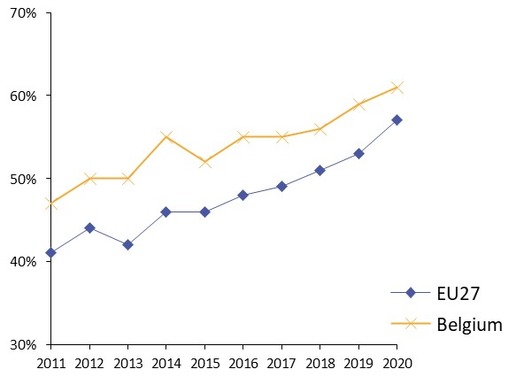
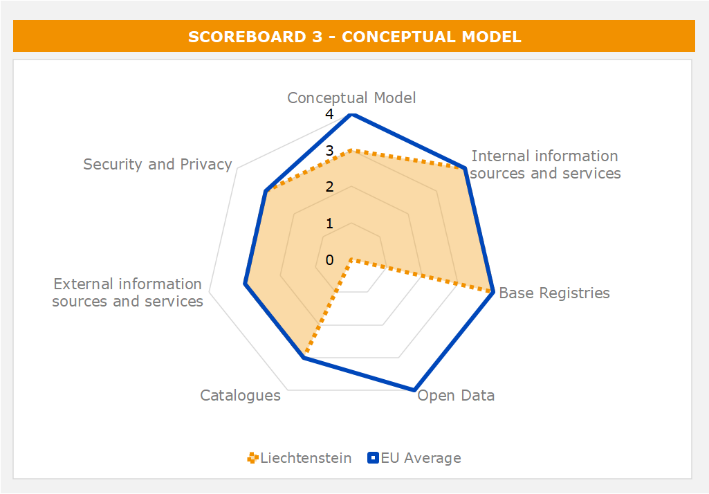
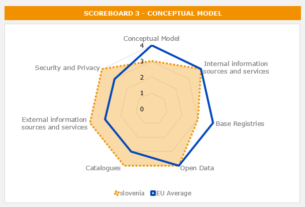
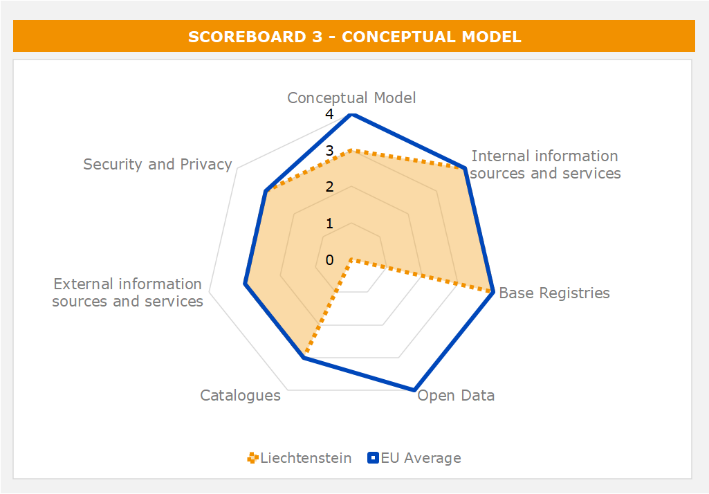
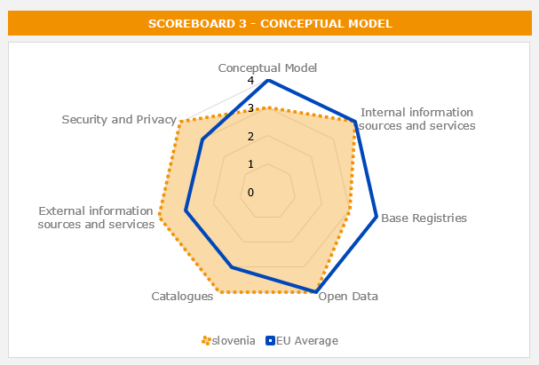
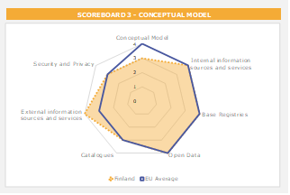
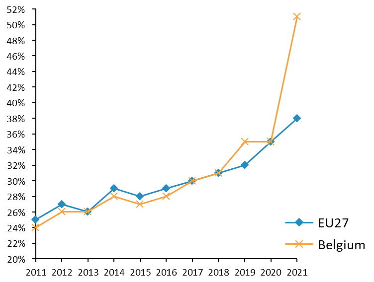

ISA2
Table of Contents
 

Digital Government Factsheet 2019
Italy
ISA2
Country Profile 3
Digital Government Highlights 6
Digital Government Political Communications 7
Digital Government Legislation 15
Digital Government Governance 22
Digital Government Infrastructure 28
Digital Government Services for Citizens 36
Digital Government Services for Businesses 43
Country Profile
Basic data
Population: 60 483 973 inhabitants (2018)
GDP at market prices: 1 753 948 (2018)
GDP per inhabitant in PPS (Purchasing Power Standard EU 28=100): 96 (2017)
GDP growth rate: 0.9% (2018)
Inflation rate: 1.2% (2018)
Unemployment rate: 11.2% (2017)
General government gross debt (Percentage of GDP): 131.2% (2017)
General government deficit/surplus (Percentage of GDP): -2.4% (2017)
Area: 301 338 km²
Capital city: Rome
Official EU language: Italian
Currency: Euro (EUR)
Source: Eurostat (last update: 15 March 2019)
Digital Government Indicators
The following graphs present data for the latest Generic Information Society Indicators for Italy compared to the EU average. Statistical indicators in this section reflect those of Eurostat at the time the Edition is being prepared.
Digital Government State of Play
The graph below is the result of the latest eGovernment Benchmark report, which monitors the development of eGovernment in Europe, based on specific indicators. These indicators are clustered within four main top-level benchmarks:
- User Centricity – indicates to what extent (information about) a service is provided online and how this is perceived.
- Transparency – indicates to what extent governments are transparent regarding: i) their own responsibilities and performance, ii) the process of service delivery and iii) personal data involved.
- Cross-Border Mobility – indicates to what extent EU citizens and businesses can use online services in another country.
- Key Enablers – indicates the extent to which five technical pre-conditions are available online. There are: Identification (eID), Electronic documents (eDocuments), Authoritative Sources, and Digital Post. Digital Post refers to the possibility that governments communicate electronically-only with citizens or entrepreneurs through e.g. personal mailboxes or other digital mail solutions.
These top-level benchmarks are measured using a life-events (e.g. mystery shopping) approach. Eight life events are included in the overall eGovernment performance score. Four of these life events were measured in 2013, 2015 and 2017 and the other four were measured in 2012, 2014, 2016, and again in 2018. The life events measured in 2017 were Regular business operations, Moving, Owning and driving a car and Starting a small claims procedure. The life events measured in 2018 are Business start-up, Losing and finding a job, Family life and Studying.
Source: eGovernment Benchmark Report 2018 Country Factsheet
Digital Government Highlights
Digital Government Political Communications
In March 2019, Italy’s Minister for Simplification and Public Administration, Giulia Bongiorno, approved the Three-Year Plan for Information Technology in public administration 2019 - 2021. In particular, the new plan introduced a novel perspective to understand the digital transformation by identifying the areas of intervention and by defining the roles of the main actors involved.
Digital Government Legislations
As part of the initiatives for the digital transformation of public administrations, Circular No. 3 of 1 October 2018, was approved. It urged all public administrations to identify within them a person responsible for the transition to digital.
Digital Government Governance
Ms. Giulia Bongiorno, Minister for Simplification and Public Administration was appointed as the National Contact Point for the management policies of public administration.
Ms. Teresa Alvaro, Director General of the Agency for Digital Italy was appointed as the National Contact Point for the development of the Digital Agenda.
Ms. Luca Attias, Extraordinary Commissioner for the Implementation of the Digital Agenda was appointed as the National Contact Point for identifying new digital and technological transformation initiatives.
Digital Government Infrastructure
The Innovative procurement portal was created to promote the use of innovation contracts, to support Italian public administrations in carrying out procurement procedures and to match supply and demand of innovative solutions by encouraging effective collaborations between public administrations, companies and research institutions, in line with the provisions of the Italian Digital Agenda.
Digital Government Services for Citizens and Businesses
- PagoPA is an initiative that allows citizens and businesses to electronically pay public administrations.
- The FSE (Electronic Health File) is the set of digital data and documents of a health and social-health nature generated by present and past clinical events concerning patients.
Digital Government Political Communications
Specific political communications on digital government
Digital Growth Strategy 2014-2020
In addition to legislative measures for general profiles and strategy in the field of Digital Agenda, the Council of Ministers approved the Strategy for Digital Growth 2014-2020, the Ultra-Wideband Plan, and the National Broadband Strategy on 3 March 2015. Both plans were defined by the Agency for Digital Italy and the Ministry of Economic Development under the coordination of the Prime Minister.
The new national plan for Ultra-wideband proposed a virtuous mix of public and private investment. Where individuals invest in equal measure to the public, the goal that can be reached is higher than the European minimum. The objective of the Strategy for the Italian Ultra-wideband is to remedy this infrastructure gap and market, creating favourable conditions for the integrated development of telecommunications infrastructure, fixed and mobile, with actions such as:
- Incentives aimed at bringing down the barriers of cost of implementation, simplifying and reducing administrative burdens;
- Coordination in the management of the subsurface through the establishment of a cadastre of below and above ground to ensure the monitoring of operations and the best use of existing infrastructure;
- Adaptation to other European countries in the field of electromagnetism limits;
- Tax incentives and credit at subsidised rates in the most profitable areas to promote the "quantum leap";
- Public incentives to invest in marginal areas;
- Direct realisation of public infrastructure in the areas of market failure.
Public resources are available to European funds ERDF and EAFRD, the Development Fund and Cohesion, for a total of 6 EUR billion, in addition to the funds from the Juncker Plan.
The national plan for Ultra-wideband is tied to the Strategy for Digital Growth. The strategy has a dynamic character, in order to be able to adapt gradually to the scenarios in the reference period 2014-2020. It is a strategy aimed at enabling digitally-literate citizens and businesses, with the help of public levers.
With the Login Italia project, the Government intends to build the house of the citizen. The system is designed as an open structure where the various actors of the public administration contribute to their area of expertise. The PA creates a single platform and opens its data and provides the services available to businesses and citizens. It is necessary to develop a new design for a new public information system in order to become more user-centred. Every citizen with their digital identity can access all the information and services concerning himself/herself on Login Italia: a "home" on the Internet, a single sign-on for all services of the public administration, to receive alerts and deadline notifications, and to make and receive payments.
Implementation of the Italian Digital Agenda requires the coordination of multiple actions by public administration, businesses and civil society, and requires management of the various sources of national and Community funding (at central and regional levels).
Three-Year Plan for IT in the Public Administration
The Three-Year Plan for IT in the public administration was defined in accordance with what is stated in the Digital Growth Strategy, including actions, definition of financial needs and the indicators represented therein, with the aim of targeting public sector ICT investments according to government guidelines and in line with European goals and programmes. The Plan proposes a systematic, distributed and shared model of management and use of the most innovative digital technologies, characterised by an agile and evolutionary management style, based on clear governance of the various levels of public administration. The synergy and balance between the three directives (innovative technologies, agile management style and clear and effective model of governance) ensures the country’s system uses more effectively the benefits of new technologies and provides citizens with an advantage in terms of ease of access and improvement of existing digital services.
The Agency for Digital Italy has assumed the responsibility of the execution of the Plan, and the coordination of the assistance to Central and Local public administration bodies in the implementation of the Plan.
In March 2019, the Minister for Simplification and Public Administration, Giulia Bongiorno, approved the Three-Year Plan for Information Technology in public administration 2019 - 2021. The new plan foresees actions to accelerate the transition to digital administrations and local entities and to empower citizens and businesses in being active protagonists of innovation.
The Three-Year Plan 2019-2021 outlines the actions needed to promote the digital transformation of the public sector, moving in the same direction defined by the 2017-2019 Plan. In particular, the new plan:
- Supports the inclusive path of digital growth of national and local governments with greater involvement of the key actors for the digital transition;
- Defines the fundamental architectural principles, the interoperability rules of national infrastructures, and the cooperation model between different ecosystems and platforms;
- Facilitates the relationship between public administrations and the market, also involving private actors in the development of integrated and interoperable services;
- Introduces a novel perspective to understand the digital transformation, with a particular focus in identifying the areas of intervention and the impact on the main actors (citizens, businesses and public administrations).
Designers Italia
Designers Italia calls upon the world of design, both inside and outside the public administration to strengthen the role of design thinking in the planning of digital public services.
Digital technologies are increasingly important to improve services and reduce costs. Designers Italia is a meeting point between people and technology with the aim of designing simple and citizen-friendly services.
Designers Italia - a national innovation project launched in June 2017 by the Agency for Digital Italy (AgID) and the Digital Transformation Team - is the benchmark for public administration design: guides, tools and a forum to foster collaboration between designers and to strengthen the role of design in developing public services.
The main objectives of this project are:
- To seek to understand citizens’ needs across the complexity of situations, needs, and moods in which they live while interacting with the PA;
- To include the people’s point of view in the process of designing and choosing technologies for public digital services;
- To work hard to make technology simpler, through a process of continuous improvement;
- To help people understand the new digital tools and give them ways to familiarise themselves with changes.
Designers Italia’s website contains several sections: Service design, Content design, User interface, User research, Projects, Blog and some discussion spaces on "Read the docs" and "Discourse" to contribute to the drafting of texts and to exchange views freely, as well a channel on “Behance”, where mainly web designers can share their projects.
Within the Projects section there are Design Guidelines for Public Administration Web Services, that include design and content rules for central and local public administration websites.
In 2016, the guidelines for the websites of local administrations, and the service design guidelines for designing & creating digital public services were published. This project was the precursor of Designers.
Designers Italia contains all public administration Design Systems: shared resources for designing, implementing, and improving digital services through varied design tools like fora, guides and checklists. Designers Italia provides for the first time a User Interface (UI) Kit, an online library made available to designers who design public services; it contains interface components needed to create prototypes and applications for citizens.
The site is first and foremost a community of practices to strengthen skills, to encourage networking, and to facilitate the encounter between supply and demand. On the site, people can talk about concrete projects that can synchronise the country’s top priorities. The government can compare best practices, thanks to a forum with sections dedicated to service design, user research, content design and user interface design. In each area the government publishes kits, which are a set of tools available to everyone: guides, checklists and templates, prototyping tools, and open source code to create digital services without ever having to “reinvent the wheel”.
Designers Italia is a different and unique innovation due to the model of involvement of stakeholders, but even more generally citizens, thanks to the creation of the forum and the use of Behance. This allows private designers to contribute with their knowledge and experience to the implementation of design guidelines.
Designers Italia is heading in the direction of the creation of a real & proper “design system” of the PA.
The design system offered intends to:
- Affirm shared standards. The community serves to improve these standards and to evolve them through the sharing of experiences: for this reason, there is a forum with several discussion threads and a blog that presents study cases and trends in design. All people involved in design within the public administration are able to come forward and contribute;
- Foster dialogue between external professionals and the world of public administration. Thus, the project devotes space to information and operating tools on how to organise and participate in a public procurement. All professionals interested in working to improve public services are invited to participate;
- Leverage common solutions, such as the PagoPA payment system, in order to initiate a process of continuous improvement and encourage adoption by as many administrations as possible;
- Create site and service templates, and for that designers launched pilot projects in different areas (for example municipalities) and then started a process that will allow the community to generalise the solutions identified and thus, to make them available to others.
Public administrations have both the capacity to either acquire the methodology and knowledge offered by Designers to build their own services internally (internal resources or in-house service providers) and/or rely on the guidelines to design competitions and public procurement for external supplies. Guidelines are always updated thanks to the feedback of the community, becoming a living space for a constant and democratic debate.
In March 2019, the national guidelines and related toolkits for designing public administrations’ web services were updated.
In addition, graphic components were provided to developers and designers through the new UI toolkit.
Digital Transformation Advancement
Through the Digital Transformation Advancement website, citizens can control the state of the art of the Italian Digital Growth projects managed by the Agency for Digital Italy. For example, there are about two million digital identities provided and five million payments to public administration done through PagoPA.
Cloud Strategy
The cloud strategy of the public administration was created to encourage the adoption of the model of cloud computing, in line with the guidelines of the Strategy for Digital Growth of the country and with the provisions of the Three-Year Plan for Information Technology in Public Administration 2019-2021. The Cloud Strategy also aims to qualify services and cloud infrastructures according to specific parameters of security and reliability suitable for the needs of the public administrations, in accordance with the following principles:
- Improvement of services’ level, accessibility, usability and security;
- Interoperability of services within the cloud model of the public administrations;
- Reduction of the risk of "vendor lock-in", i.e. creation of a dependency relationship with the service provider;
- Requalification of the offer, expansion and diversification of the suppliers' market;
- Resilience, scalability, "reversibility" and data protection;
- Opening up of the market to small and medium-sized enterprises (SMEs).
The adoption of the cloud infrastructure allows, in fact, to improve the operational efficiency of ICT systems, to achieve significant cost reductions, to make easier and cheaper to update software, to improve security and data protection and to speed up the delivery of services to citizens and businesses.
The cloud strategy outlined by AgID provides the prerequisites needed by public and private entities to provide cloud infrastructures and services to the public administration, so that the latter can adopt homogeneous cloud computing services and infrastructures that meet high standards of security, efficiency and reliability, in line with the provisions of circulars AgID no.2 and no. 3 of April 9 2018.
AgID has outlined the compliance requirements for security, performance and scalability, interoperability, portability, as well as the ones related to the organisational and legislative aspects. In particular, Italian public administrations are looking for:
Providers who meet the quality requirements will then be able to enter the Cloud Services Catalogue for public administrations, already available from July 2018. On this platform, all public administrations will have the opportunity to find out about the infrastructures and services available to guide their purchasing choices. From 1 April 2019, public administrations could acquire infrastructures and solutions through the Cloud Catalogue.
Key enablers
Access to public information
Third Open Government Partnership (OGP) Action Plan
Italy published its third OGP Action Plan, covering the period 2016-2018, the result of a joint effort of more than 20 public administrations and the First National Forum on Open Government, which was attended by more than 60 organisations (universities, research centres, consumers’ associations and trade associations).
The central themes of the Plan are Open data and Transparency, Participation and Accountability, Digital Citizenship and Innovation.
With this new Plan the Italian Government wants to strongly relaunch its commitment on the Open Government, transparency, digital citizenship, participation and accountability which are also the fundamental objectives of the public administration Reform.
The new plan was published in September 2016.
The Plan contained 34 actions divided into the three thematic areas:
- Open data and transparency (12 actions)
- Participation and accountability (16 actions)
- Digital Citizenship and Innovation (six actions)
The Plan included actions that enabled the country to further open up, in line with OGP values of access to the public sector, civic participation, accountability and digitalisation of public administration.
After the adoption of the Freedom of Information Act (FOIA), part of the reform of public administration, the Government worked to ensure the right of civic access and monitor its implementation.
Among the first countries to adhere to the Charter of the International Open on the project, Italy today is equipped with a new strategy on open data in the public administration in order to give priority to requests that come from civil society, improving the quality and availability of information, enhancing transparency and promoting the reuse of published data.
With the third Action Plan Italy gives continuity to different projects like Soldipubbici, OpenCoesione, ItaliaSicura and Opencantieri, strengthening them and launching other initiatives on transparency in Government investment.
Furthermore, the Plan includes the participation of local administration: municipal and regional authorities are engaged in projects relevant to the prevention of corruption and protection of digital rights.
eID and Trust Services
SPID – Public System of Digital Identity
SPID, the Public Digital Identity System, is the solution that allows users to access all the online services of the Public Administration with a single digital identity (username and password) that can be used by computers, tablets and smartphones. Its usage is becoming commonly accepted among public administrations and citizens: in 2019 more than 4 000 public administrations and more than 4 million citizens decided to adopt it.
SPID is rapidly evolving and AgID is currently working on different regulations to extend the use of SPID to physical persons on behalf of legal entities. It would make it possible to replicate the effect of an authenticated signature. The introduction of OpenID Connect technology to complement the SAML (Security Assertion Markup Language) technology currently in use, will reduce the burden to authenticate the subjects requesting the SPID.
As for the eID, the dissemination of electronic identity cards made possible the initiation of the process of notification of the eID in itself pursuant to art. 9 of the eIDAS Regulation, which was fully implemented in the first half of 2019.
Electronic ID card
AgID started the process to integrate the Italian Electronic ID card to be used within public administrations of the Member States.
Public consultations to define the guidelines to integrate the use of electronic ID cards for professional usage were concluded. The guidelines identified the way the identity providers should proceed to release electronic ID cards for professional usage in order to verify the affiliation of individuals to organisations and their professional expertise.
The Italian eIDAS node is active and interconnected with Belgium, Estonia, Greece, Spain and Sweden. Italian citizens can access the public administrations’ services offered by those countries.
Security aspects related to digital government
Cybersecurity
The Agenzia per l'Italia Digitale, in compliance with the Directive of the President of the Council of Ministers of 1 August 2015, undertook the design and planning of useful strategies to ensure the resilience of the national IT infrastructure of the public administration. The goal was to increase the responsiveness and efficiency of the cybersecurity systems of public administrations to prevent the occurrence of events such as accidents or hostile actions aimed at compromising normal provision of service. The first step was the drafting of the Guidelines for ICT Security of Public Administrations and its reference within the Minimum ICT Security Measures for Public Administrations document, published in 2016. More recently, as part of the programme for the implementation of the Digital Agenda, AgID launched the Italia Login project through which AgID aims at creating an integrated environment, from the level of infrastructure to that of applications, standards and norms, as a basis for the development and delivery of public administration services for citizens and businesses.
Acknowledging the importance of the impact of cyber-attacks to which public administrations may be exposed, in 2018 a risk management methodology was designed and developed, starting from the ones already applied in the private and public sector, both nationally and internationally. The main characteristics are the following:
- To be applied to all public administrations, which differ in size, technological complexity and typologies of services delivered to businesses, citizens and other public entities;
- To be supported by an application tool that can be used by all public administrations and integrated with other central IT infrastructures such as "Servizi.Gov.it".
Starting from the second half of 2018, PAC and PAL were involved in the experimentation of the cyber risk self-assessment tool developed by AgID and available on SicurezzaIT.
Interconnection of base registries
Base RegistriesAccording to the three-year-plan (Piano Triennale), Italy implemented controlled vocabularies and metadata plan for 17 Base Registries.
eProcurement
Framework agreement with the Ugo Bordoni Foundation
In February 2018, AgID signed a framework agreement with the Ugo Bordoni Foundation, which provided support for the management and implementation of procedures and specifications for Pre-Commercial Procurement (PCP) contracts aimed at the conclusion of R&D contracts.
Memorandum of Understanding Between AgID, the Campania Region and Soresa
In May 2018, a Memorandum of Understanding between AgID, the Campania Region and Soresa was agreed to promote the use of innovation and pre-commercial procurement, particularly in the digital health and ICT sectors.
Collaboration Agreement Between AgID and the Agency for Territorial Cohesion
In June 2018, a Collaboration agreement between AgID and the Agency for Territorial Cohesion was agreed for the implementation of the 2014-2020 Community Programme and, in particular, the coordination of the actions provided for the stimulation of public demand for innovation and the promotion of pre-commercial public procurement.
Institute for Innovation and Transparency of Procurement and Environmental Compatibility
In September 2018, the Memorandum of Understanding with the Conference of Regions and Autonomous Provinces, Confindustria and Ithaca (Institute for Innovation and Transparency of Procurement and Environmental Compatibility) was agreed. It aimed to identify strategies to enhance the role of public demand as a lever for innovation.
Procurement for Innovation in Puglia Region
In December 2018, a collaboration agreement for growth and digital citizenship was agreed in the Puglia Region. It included the outline of actions needed for the promotion of “Public Demand for Innovation” and the deployment of the model of “Procurement for Innovation”.
AgID Roadshow - Manage Public Demand as a Lever for Innovation
From December 2018 to February 2019, in order to promote a better knowledge of procurement innovative, AgID, together with Confindustria, Conference of Regions and Autonomous Provinces and Ithaca (as operational actor of the Memorandum of Understanding), launched the roadshow Manage Public Demand as a Lever for Innovation. The roadshow encouraged the dialogue between public and private innovative players in several cities.
Domain-specific political communications
No political communication was adopted in this field to date.
Interoperability
No political communication was adopted in this field to date.
Emerging technologies
Artificial Intelligence and Blockchain
Under the Ministry of Economic Development, two expert groups on Artificial Intelligence and Blockchain was established.
In March 2018, the first White Paper "Artificial Intelligence at the Service of the Citizen" was presented in Rome by the IA Task Force of the Agency for Digital Italy.
The white paper illustrated the guidelines and recommendations for the sustainable and responsible use of Artificial Intelligence in public administration and it represented the first step to connect public administrations and private sector. The aim was to match supply and demand for innovative services.
In January 2019, meetings of expert groups on AI, Blockchain and distributed registers were conducted. The opening meeting was chaired by Andrea Cioffi, Undersecretary for Economic Development responsible for Industry, supported by Marco Bellezza, Legal Adviser to Minister Luigi Di Maio on Telecommunications and Digital Innovation. The meeting was attended by the experts selected to set, together with MiSE, the national strategies, outlining the objectives, agenda and working methods of the respective groups. Elements for comparison were also defined:
- For AI: enhancing research, bringing IA from the laboratory to the market; education, skills and lifelong learning; attracting and encouraging qualified investments in AI; data as a new production factor; regulatory framework and ethical impacts; improving public services through AI.
- For Blockchain and distributed registers: characteristics of technology and evolutionary lines; the role of Italy in the European scenario; tracing Italian experiences in the private and public sector; Italian research and experimentation on Blockchain and distributed registers; fourth industrial revolution - world of production and exchange of value; education, skills and lifelong learning; towards the construction of a regulatory framework of reference; strategic sectors and enabling use cases - certification and protection of Made in Italy.
Digital Government Legislation
Specific legislation on digital government
Circular no. 3/2018
As part of the initiatives for the digital transformation of public administrations, the Minister for Simplification and Public Administration, Giulia Bongiorno, issued Circular no. 3 of 1 October 2018, which urged all public administrations to identify within them a person responsible for the transition to digital.
Legislative Decree no. 217/2017
The last reform of the Digital Administration Code (Codice dell’Amministrazione Digitale – CAD) laid down the legal foundations for many of the services established in the Three-Year Plan for ICT in the Public Administration.
Many online services are already being implemented, such as that of Digital Citizenship or the Data and Analytics Framework (DAF), and even the service for the election of the citizens’ ‘digital residency’.
The last version of the Code set forth important modifications, as for instance:
- Definitions of open format, open data, digital domicile, digital citizenship;
- Electronic signatures and other means foreseen by the eIDAS Regulation 2014/910, in order to be perfectly compliant to EU law;
- Simplified process in order to issue technical guidelines under the responsibility of the Agency for Digital Italy;
- Provision of a new public repository for the retrieval of documents subject to transparency obligations and new rules about eDocuments’ management;
- Provision of a new national platform of data (Piattaforma Digitale Nazionale Dati), in order to simplify the knowledge of the public informative assets;
- Extended use of the ePayment platform;
- Re-use of software among the public administrations.
Legislative Decree no. 179/2016
The Legislative Decree of 26 August 2016, no. 179, modified the Digital Administration Code (DAC) introducing new changes and integrations to the Code.
The main objective of the reform was to shift the focus from the digitisation process to digital rights of citizens and businesses. The Digital Citizenship Chart recognised rights directly to citizens and enterprises. This became the legal basis to implement Italia Login, the access platform that enables to access public services through the public system digital ID (SPID).
Legislative Decree no. 133/2014
The Legislative Decree of 12 September 2014, no. 133, bearing the title ‘Urgent Measures for the Opening of the Sites, the Construction of Public Works, the Digitisation of the Country, the Bureaucratic simplification, the Emergence of Hydrogeological and for the Resumption of Activities', was approved by the Legislature to strengthen the national economy and reduce bureaucracy. It contained measures on the reopening of shipyard facilities (id. arts. 1-4); the enhancement of highway networks and telecommunications (id. arts. 5-6); environmental protection and the mitigation of hydrogeological damage (id. arts. 7-8); cutting of bureaucratic red tape (id. arts. 9-16); revival of construction activities (id. arts. 17-27); ports and airports (id. arts. 28-29); the reactivation of investment in the country, particularly through the promotion of the Made in Italy brand (id. arts. 30-32); environmental remediation and urban regeneration in areas of national interest (id. arts. 33-35); energy-related matters (id. arts. 36-39); and financial affairs within the purview of local authorities (id. arts. 40-45).
Legislative Decree no. 69/2013
Legislative Decree of 21 June 2013, no. 69, bearing the title “Urgent Measures for Economic Recover: Measures to Enhance the Digital Italian Agenda”, was passed.
Legislative Decree no. 179/2012
The Legislative Decree of 18 October 2012, no. 179, bearing the title ‘Further Urgent Measures for the Country's Growth and Implementation of the Digital Italian Agenda’, was passed with the aim of introducing important measures to foster the creation and development of innovative start-up companies in Italy by amending the Italian civil code provisions affecting company law as well as the relevant tax regime.
Legislative Decree no. 83/2012
Legislative Decree of 22 June 2012, no. 83, bearing the title ‘Urgent Measures for the Country's Growth’, contains the foundation of the Agency for Digital Italy, subject to supervision of the Prime Minister or the Minister of his deputy, the Minister of Economy and Finance, the Minister for public administration and the simplification of Minister of Economic Development and the Minister of Education, University and research community, was passed. Under this legislative decree, the Italian government has approved legislation to provide methods of funding for unlisted companies beyond the traditional loan financing – in particular, it aimed to improve access to capital markets for small and medium-sized enterprises by facilitating the issue of short-term and mid- to long-term debt.
Legislative Decree no. 235/2010 - Digital Administration Code (DAC)
The new Digital Administration Code (DAC) was modified to include regulations in line with the ongoing development of technology. Important changes and supplements were recently introduced by Legislative Decree of 30 December 2010, no. 235, which further updated the regulatory framework on the subject of digital administration. The code introduced a group of regulatory changes that had a concrete impact on the administration’s conduct and practices, as well as on the quality of the services rendered to the public and businesses, guaranteeing greater transparency, timelines, accessibility and efficiency. The most recent reform went into effect on 25 January 2011, with the phase-in of the initiatives planned for 2012, consistent with the eGovernment Plan. The new DAC endorsed new rights for the public and businesses, as well as new opportunities and obligations for the public administrations.
Legislative Decree no. 177/2009
The Legislative Decree no. 177 of 2009, reorganised the National Centre for Computing in Public Administration (CNIPA) and converted it into DigitPA (currently AgID), an agency for the Digitalisation in the Italian public administration, placed under the responsibility of the Minister for Public administration and Innovation. The decree completes the reform of the Italian civil service launched, in October 2009, by the Legislative Decree no. 150/2009. The mission of the new body was to provide value for citizens and businesses, implementing the eGovernment policies.
Legislative Decree no. 150/2009 on the Implementation of Law no. 15/2009
On 27 October 2009, the Government approved Legislative Decree no. 150 implementing Law no. 15/2009 on civil service reform and the efficiency and transparency of public administration. The reform was engineered around citizens, in their role of stakeholders of the public services acting as drivers of the innovation.
Law no. 2/2009
Law No. 2 of 28 January 2009 converted into law the Decree No. 185 of 29 November 2008, which contained measures intended to overcome the economic crisis. Article 16-bis of the Decree stated that all citizens must receive a PEC box upon request and that certified electronic mail was free of charge and equivalent to a notification by regular mail (article 48). Furthermore, public administrations used certified electronic mail for the communications and the notifications to its employees.
eGovernment Code
The eGovernment Code (Codice dell’Amministrazione Digitale) entered into force on 1 January 2006. It aimed to provide a clear legal framework for the development of eGovernment and for the emergence of an efficient and user-friendly Public administration. The Code granted citizens and businesses the right to demand and obtain the use of electronic means by public administration bodies, in their day-to-day transactions with the users.
To facilitate the implementation of the eGovernment Code and accelerate the computerisation of the Italian public offices, the Minister for Reform and Innovation within public administration signed, in February 2007, a Ministerial Order on the interchange of data between public administrations and the publication of negotiation activities (known as the 'Innovation Directive').
Key enablers
Access to public information
Legislative Decree no. 97/2016
The Legislative Decree of 14 March 2013, no. 33, bearing the title, Reorganisation of the Discipline Concerning the Obligations of Publicity, Transparency and Dissemination of Information by Public Authorities, was adopted by the Government under Law no. 190/2012, bringing into force the systematisation of the main publication requirements.
The Legislative Decree represented a continuation of work undertaken by law 190/2012 (anti-corruption law) and, through greater transparency of all public authorities, had as its main objectives to:
- Encourage corruption prevention;
- Activate a new type of "social control" (civic access) objectives;
- Support performance improvement;
- Improve accountability of public managers;
- Enable new mechanisms of participation and cooperation between public administration and citizens.
In May 2016, Legislative Decree of 25 May 2016, no. 97, redefined the scope of the obligations and measures regarding transparency, the measures for publishing some specific typology of information. It reduced the burdens on public administrations by identifying the parties responsible for imposing penalties for violating the transparency obligations. The Legislative Decree also introduced the Freedom of Information Act (Foia) which allowed citizens to access data and documents of public administration even if they are not made public.
Law on Administrative Procedure and Access to Administrative Documents
Chapter V of Law no. 241 of 7 August 1990, provided for limited rights of access to administrative documents. Public bodies must respond to a request for administrative documents within 30 days. Information can be withheld when it relates to (a) security, national defence and international relations; (b) monetary and foreign exchange policy; (c) public order, prevention and repression of crime; and (d) privacy of third parties. Appeals can be lodged to a regional administrative court, whose decisions can be appealed to the Council of State.
In 2015, Law no. 124 of 7 August 2015, simplified the administrative procedures for Italian public administrations and introduced new elements, such as the electronic ID card, and updated the regulation for what concerns transparency.
Legislative Decree no. 102/2015
In January 2006, Legislative Decree no. 36 transposed the EU Directive on the re-use of public sector information (Directive 2003/98/EC). The Italian Government drafted an amendment to the Legislative Decree 24 January 2006, no. 36 on the re-use of documents in the public sector that transposed the re-use of public sector information Directive 2003/98/EC correctly, following controversy on the correct transposition of the Directive on PSI re-use in Italy.
In 2015, to harmonise the national legislation with the Directive 2013/37/UE, Italy enacted Legislative Decree (no. 102/2015). It defined, among other things, the new conditions for telematic access and re-use of data coming from public administrations. In addition, it set the standards of Open Data by default.
eID and Trust Services
eGovernment Code
In 2017, the eGovernment Code, originally published in 2005, was updated by Legislative Decree no. 2017. The amendments concerned numerous aspects of the previous regulation and in particular the part relating to digital domicile and public mailing lists with the aim of further facilitating the use of electronic communication systems. Action was also taken on the definition of the parameters to confer legal value to electronic documents.
The new code also contained a series of provisions related to the bodies empowered to certify digital signatures and to the documents’ preservation
Legislative Decree no. 82 on Electronic Signatures
Italy was among the first EU countries to give full legal value to electronic signatures. Law no. 59 of 15 March 1997, on the simplification of the Public Administration, provided in Article 15 that the use of electronic means would be legally valid for administrative procedures. Rules regarding the use of electronic signatures and documents were further detailed in a series of presidential and government decrees adopted between 1997 and 2001. Legislative Decree no. 10 of 23 January 200,2 brought the Italian electronic signature regulations in line with Directive 1999/93/EC on a Community framework for electronic signatures. In 2005, the related legislation was repealed by the Legislative Decree no.82 that defined the eGovernment code.
Security aspects related to digital government
Data Protection Code
In 2004, the Data Protection Code entered into force replacing the previous Data Protection Law (Law no. 675/1996), as well as a number of other legislative and regulatory provisions.
The Data Protection Code updates completed and consolidated Italy's data protection legislation (1996) by introducing important innovations conforming national legislation to European regulations, in particular the Data Protection Directive (95/46/EC) and the Directive on Privacy and Electronic Communications (2002/58/EC). The code strengthened the data protection rights of individuals, allowing them to exercise their rights and instigate proceedings more easily. The Code was further amended on 4 November 2010, and again in 2018. Legislative Decree no. 101/2018 harmonised the national regulation with the provisions of Regulation (EU) 2016/679, concerning the protection of natural persons with regard to the processing of personal data, as well as to the free movement of such data.
The Data Protection Commissioner (Garante Privacy) is in charge of supervising and enforcing the application of the Data Protection Code. In an effort to simplify the complaint process, the Commissioner published a complaint' form on its website.
Interconnection of base registries
Legislative Decree no. 91/2014
Legislative Decree no. 32 of 2010 acknowledged the European Directive 2007/2/CE establishing an infrastructure for Spatial Information in the European Community (INSPIRE). The Decree assigns to the Italian National Register of Spatial data (Repertorio nazionale dei dati territoriali, set up by Legislative Decree no. 82/2005 of the Digital Administration Code) the function of national catalogue of metadata. In 2014, the Legislative Decree no. 91/2014 aligned national legislation with the new parameter set by the European Legislation.
National Registry of the Resident Population (ANPR)
The National Registry of the Resident Population (ANPR), was set by the Digital Administration Code, Chapter V - Data of Public Administration and Network Services, Article 62. It defined the National Registry of the Resident Population (ANPR) as a merger of the Index of National Registries (INA) and the Italian population residing abroad (AIRE). Regarding the use of personal data, the Digital Administration Code mandated that personal data should be stored locally and aligned continuously with the ANPR. The ANPR only allowed for certification of personal data by municipalities if these were in compliance with the provisions of Article 33 of the Decree of the President of the Republic May 30, 1989, no. 223. Nonetheless, municipalities may be allowed to use personal data using special agreements. Furthermore, the ANPR also granted other public administrations and organisations access to its data for the purpose of providing services.
Land Registry
The Land Registry or the National Directory of Geographic Data (RNDT) is also prescribed for in the article 59 of the Digital Administration Code (DAC). It gathers geographic data held by public authorities at the national, regional and local level. Thus, Article 59 established the technical rules for the gathering of spatial data to be implemented by public authorities. These rules apply to the establishment of spatial databases, documentation, usability and the exchange of data between the central and local public administrations by the provisions of the DAC.
Companies Registry
The Registry of Companies´ legality was provided by Article 2188 of the Civil Code. The Registry has been fully operational from 19 February 1996, under Article. 8 of Law 29 December 1993, no. 580, on the Reorganisation of the Chambers of Commerce along with the DPR 581/95, containing the special regulations for the implementation of the Registry’s activities.
Once-Only principle
In Italy, the Once-Only principle was transposed into legislation through Decree no. 82 of 7 March, 2005, the Digital Administration Code (DAC) Articles 50 and 58. Both articles stated that public administrations needed to cooperate with each other to obtain the needed information, rather than acquiring it from citizens who are not obliged to provide the same information to the public administration more than once. As a result, steps undertaken towards applying the OOP included the creation of common data models for some databases or base registries, such as the National Directory of Geographic Data (RNDT), and the National Registry of the Resident Population (ANPR). Nonetheless, Italy still had to invest efforts towards applying the principle in a broader scope, and in turn, ensure that public administrations exchange data between each other without requesting additional data from the citizens or enterprises.
eProcurement
Legislative Decree no. 50/2016
Legislative Decree of 18 April 2016, no. 50, modified the previous Public Procurement Code, and implemented Directives 2014/23/UE, 2014/24/UE and 2014/25/UE.
Public Procurement Code
Adopted on 12 April 2006, the Public Procurement Code implemented Directive 2004/17/EC coordinating the procurement procedures of entities operating in the water, energy, transport and postal services sectors, plus Directive 2004/18/EC on the coordination of procedures for the award of public works, public supplies and public service contracts. The Code introduced provisions relating to eAuctions, dynamic purchasing system, eCatalogues and other electronic means used in public procurement procedures.
Presidential Decree DPR 207/2010
In April 2002, Presidential Decree DPR 101/2002 established the framework for an electronic procurement procedure (gara telematica) above the EU thresholds, and the eMarketplace (MEPA) for public procurements below the EU thresholds. The Decree has also tasked the Ministry of Economy and Finance to build and run a centralised eMarketplace accessible to all Italian Public Administrations (MePA - Mercato Elettronico della Pubblica Amministrazione). The Ministry once again entrusted Consip to implement and manage the MePA. The Presidential Devree DPR was repealed by the Presidential Decree DPR 207/2010 that implemented Directive 2004/17/CE and Directive 2004/18/CE.
Domain-specific legislation
Determinazione 36/2018 AgID
Determinazione 36/2018 AgID of 12 February 2018, for the reorganisation of the second level of the web-domain “.gov.it”. Within the web-domain ".gov.it", the third level-domains were assigned only to the central administrations listed in Article 1, Paragraph 3, of Law no. 196 of 31 December 2009. On February 2018, this list was amended, ordered and published in the Official Gazette. Subsequently, in collaboration with MIUR and CNR, a roadmap was defined to assist the migration path of organisations such as schools (from gov.it to edu.it) and local authorities (from gov.it to .it).
Within its first year of publication, and only six months after the opening up of the registration process to the domain edu.it, more than 4 000 schools migrated to the domain edu.it.
Health Card System Legislation
During the fiscal year 2019, individuals were required to send data to the Health Card system for the purpose of processing the pre-filled tax return, pursuant to Article 3, paragraphs 3 and 4, of Legislative Decree 21 November 2014, no. 175. Fiscal data transmitted to the Health Card System could only be used by public administrations for the application of tax and customs provisions, or, in aggregate form, for the monitoring of public and private health expenditure as a whole. By decree of the Minister of Economy and Finance, in agreement with the Ministers of Health and Public Administration, having consulted with the Guarantor for the protection of personal data, the terms and scope of use of the aforementioned data and the relative limits, including time limits, were defined. The terms and scope of use were compliant with the principles on the subject of the protection of personal data, also with reference to the obligations set out in Articles 9 and 32 of Regulation (EU) 2016/679 of the European Parliament and of the Council of 27 April 2016, as well as with the Legislative Decree no. n of 30 June 2003, describing the types of data that may be processed, the operations that may be carried out, the appropriate and specific measures to protect the rights and freedoms' of the person concerned.
The Decree Law of 14 December 2018, no. 135, converted with modifications by the Law 11 February 2019, no. 12, provided that provisions of Article 10-bis of the Decree-Law 23 October 2018, no. 119, converted, with amendments, by Law no. 136 of 17 December 2018, also applied to persons who were not required to send data to the Health Card System, with reference to invoices for health services provided to natural persons.
Legislative Decree no. 90/2014
The Legislative Decree of 14 June 2014, no. 90, bearing the title ‘Simplification and Administrative Transparency and Efficiency of the Courts’, introduced some important news regarding telematics civil proceedings and services via certified e-mail carried out by lawyers. By means of this decree, the electronic filing of documents during civil proceedings became mandatory. The decree also expanded and clarified the cases in which lawyers can serve judicial documents via certified e-mail.
Legislative Decree on Electronic Commerce
Legislative Decree no. 70 of 9 April 2003, came into force on 14 May 2003. It regulated the use of electronic commerce in Italy, as well as the information that eCommerce websites compulsorily provide to purchasers. The Decree transposed Directive 2000/31/EC on certain legal aspects of information society services, in particular electronic commerce in the Internal Market ('Directive on electronic commerce').
Interoperability
No legislation was adopted in this field to date.
Emerging technologies
No legislation was adopted in this field to date.
Digital Government Governance
National
Policy
Ministry of Simplification and Public Administration – Department of Civil Service
The Ministry for Simplification and Public Administration is responsible for the management policies of public administration.
The Department of Civil Service is the structure of the Presidency of the Council of Ministers which is entrusted with overseeing the reform and modernisation of public administration policies. It is also the structure that provides support to the Minister for Simplification and Public Administration in carrying out tasks delegated by the President of the Council of Ministers.
The Department is composed of seven offices. In particular, the Office for Innovation and Digitisation promotes and coordinates policies and innovative interventions to support the digital transition of public administrations; controls the implementation of the priority initiatives of the Agency for Digital Italy; promotes the adoption of tools and models to give practical effect to the digital citizenship principles and the open government; provides technical support legislation activities in the field of Digital Agenda.
Digital skills for the Public Administration syllabus was created to define the set of digital knowledge and skills considered key for the public administration, such as: data and information management, security, online services, communication and knowledge of emerging technologies.
 | Giulia Bongiorno Minister Simplification for Public Administration Contact details: Ministry for Simplification and Public Administration Corso Vittorio Emanuele II, 116 00186 Rome Tel.: (+39) 06 68997580 Fax: (+39) 06 68997188 E-mail: ministropa@governo.it Source: http://www.funzionepubblica.gov.it/ |
Agency for Digital Italy, Prime Minister's Office
The Agency for Digital Italy (Agenzia per l'Italia Digitale - AgID) coordinates actions in the field of information and communication technologies to promote innovation in support of public administration, ensuring the achievement of the objectives of the Italian Digital Agenda in line with the Digital Agenda for Europe.
The Institution was established by Legislative Decree no. 83, converted into Law no. 134/2012, and inherited the powers of the Department for the Digitisation of Public Administration and Technological Innovation for the Diffusion of Technology Innovation, those of AgID and of the Higher Institute of Communications and Information Technology regarding matters of security expertise of networks.
The Agency carries out the design and coordination of strategic initiatives for more effective delivery of network services by the public administrations to citizens and businesses. It elaborates and processes the technical rules and guidelines for seamless interoperability and applications' cooperation between governmental information systems and those of the European Union, it ensures technical uniformity of public information systems designed to deliver services to citizens and businesses, while providing consistent levels of quality and usability throughout the country, as well as their full integration at a European level. It has published online guidelines for digital professionals and e-leaderships skills.
The Agency also constitutes the hub to boost the Italian participation in the European and national programmes for the development of the Digital Agenda.
| Teresa Alvaro Director General of the Agency for Digital Italy Contact details: Agency for Digital Italy Via Liszt 21 00144 Rome Tel.: (+39) 06852641 E-mail: protocollo@pec.agid.gov.it Source: http://www.agid.gov.it/ |
Digital Transformation Team
The Digital Transformation Team depends on the Presidency of the Council of Ministers and is involved in the definition of the country's strategy on digitisation of public administration. Under the leadership of an extraordinary Commissioner for Digital Transformation, the team identifies new digital and technological transformation initiatives.
| Luca Attias Extraordinary Commissioner for the Implementation of the Digital Agenda Contact details: Digital Transformation Team Palazzo Chigi Piazza Colonna 370 00187 Rome E-mail: teamdigitale@governo.it Source: https://teamdigitale.governo.it/en/team |
Coordination
Ministry for Simplification and Public Administration - Department of Civil Service
The Ministry for Simplification and Public Administration is in charge of the coordination of eGovernment tasks at all levels of the Italian administration (central, regional and local). It ensures consistency among digital innovation policies conducted at central and local levels while coordinating projects involving several administrations. The Department of Civil Service also acts as an observatory of the information society and the digital divide monitoring the projects implemented by central and local administrations.
Agency for Digital Italy, Prime Minister's Office
The Agency for Digital Italy is in charge of the coordination of the processes of governance and electronic governance of the Italian territory, as well as for the relations with all departments and bodies regarding information society (Consip, etc.).
Digital Transformation Team
Among the Digital Transformation Team tasks, there is also the coordination of the different government and PA stakeholders to manage existing and future digital programmes in an integrated manner with an agile methodology and an open data approach.
Implementation
Agency for Digital Italy, Prime Minister's Office
The Agency for Digital Italy elaborates and processes the technical rules and guidelines for seamless interoperability and applications' cooperation between governmental information systems and those of the European Union. It ensures technical uniformity of public information systems designed to deliver services to citizens and businesses, while providing consistent levels of quality and usability throughout the country, as well as their full integration at European level.
The Agency also constitutes the hub to boost the Italian participation in the European and national programmes for the development of the Digital Agenda.
Government Departments and Agencies
Government departments and agencies are responsible for the implementation of departmental eGovernment projects falling within their respective jurisdiction.
Support
Ministry for Simplification and Public Administration - Department for Civil Service
The Department for Civil Service supports the modernisation of the Italian public administration. The Department promotes reform initiatives to enhance the efficiency and effectiveness of the public administration.
Agency for Digital Italy, Prime Minister's Office
The Agency for Digital Italy is responsible for the provision of technical support and consultancy for the Italian public administrations and the Italian Government.
Formez
Formez is an in-house organism of the Department of Civil Service with the aim to develop and deliver training services to public sector staff, in particular, training related to modernisation and ICT-related programmes in order to support the modernisation, competitiveness and efficiency of public administration locally, regionally and internationally.
Base registry coordination
Ministry of Economy and Finances, l´Agenzia delle entrate
The Ministry of Economy and Finances is responsible of the Tax Data Archive. The Tax Registry is a set of databases not listed officially in the law as a base registry. It could be good candidate for future base registries.
Ministry of Interior
The Ministry of Interior is responsible for the National Registry of the Resident Population (ANPR).
The National Registry of the Resident Population (Anagrafe Unica Nazionale) is in the process of becoming a centralised database that substitutes the municipal databases for the Index of National Registries (INA) and the Italian population residing abroad (AIRE).
The reason behind the centralisation of the ANPR is the fact that each municipality has created its database; in doing so, they replicated the data. It was clear that the Once-Only principle was not being implemented. To resolve this issue, the Ministry of Economy and Finance, through SOGEI, built a system where all the data is centralised. Different municipalities can access the central database directly. Nevertheless, they still maintain their local databases. Municipalities persist in doing so, because moving the data to the centralised system in its entirety is complicated, as they have developed their individual applications over the years.
Currently, the central database is being updated through a synchronisation software. The process involves integrating the current local/municipal databases into the centralised one. Through this process, outdated municipal databases are also being updated. The reading and writing of the information is done through the central database, which is then transposed to the municipal database.
Ministry of Infrastructure and Transport
The Ministry of Infrastructure and Transport is responsible for the Vehicle Registry. The Vehicle Registry is a set of databases not listed officially in the law as a base registry. It could be a good candidate for future base registries.
Chamber of Commerce, InfoCamere
Chamber of Commerce is responsible for the Company Registry. The Company Registry can be defined as the Registry of Company Details: it contains information (incorporation, amendments, cessation of trading) for all companies with any legal status and within any sector of economic activity, with headquarters or local branches within the country, as well as any other subject that is required by law. InfoCamere is the consortium company for the Italian Chambers of Commerce, which created and managed the Company Registry. The Company Registry is also interacting with other databases in a cross-border manner.
Territory Agency
The Territory Agency is responsible for the Land Registry or RNDT (Repertorio Nazionale dei Dati Territoriali) which is the national catalogue of metadata on spatial datasets and related services available to the public administrations. The catalogue is also a public registry of spatial data, thus certifying their existence through the publication of the related metadata.
Ministry of Justice
The Ministry of Justice is responsible for the Criminal Database.
National Anti-Corruption Authority (ANAC)
The National Anti-Corruption Authority (ANAC) is responsible for National Database of Public Contracts.
National Institute of Statistics
The National Institute of Statistics is responsible for the Catalogue of National Addresses and Civil Numbers.
Audit
Court of Auditors
The role of the Italian Court of Auditors is to safeguard public finance and guarantee the respect of jurisdictional order. The Court pursues these two aims through two functions: the audit function and the jurisdictional function.
Data Protection
Italian Data Protection Authority
The Italian Data Protection Authority (Garante per la Protezione dei Dati personali) is an independent authority in charge of supervising and enforcing the application of the Data Protection Code. In an effort to simplify the complaints process, the Authority has published a complaint form on the website.
Subnational (federal, regional and local)
Policy
Regional Governments
Besides the common policies agreed at the national level with central government ministries and with the other regional Governments, each Italian regional government has adopted a regional information society strategy, which almost always comprises a territorial action plan for eGovernment.
Coordination
Standing Committee on Technological Innovation in Regions and Autonomous Local Authorities
The State regulates the electronic coordination of state, regional and local administration data and lays down the technical regulations necessary to guarantee the security and interoperability of computer systems and data flows for the circulation and exchange of data and for access to online services. To reach this objective, the eGovernment Code established the Standing Committee on technological innovation in regions and autonomous local authorities, with the function of advising and proceeding preliminary inquiries on agreements and collaboration initiatives promoted by the administrations.
Ministry of Simplification and Public Administration – Department of Civil Service
The Ministry for Simplification and Public Administration is in charge of coordinating eGovernment tasks at the regional and local levels of the Italian administration, by ensuring consistency in digital innovation policies while coordinating projects involving several administrations.
Implementation
Regional and Local Authorities
Regional and local authorities are responsible for the implementation of regional and local eGovernment projects falling within their respective areas of competence.
Support
Regional Competence Centres for eGovernment
The Regional Competence Centres were established following an agreement between the Central Government and the presidents of all 19 regional and two autonomous provincial authorities in March 2002, renewed through bilateral agreements in 2006. The agreement created a network of expertise providing local public sector bodies with technical assistance, information and training activities, support in their efforts to implement eGovernment, upgrade of their IT systems and reorganisation of both their back-office processes and their service delivery channels.
Union of Italian Provinces
The Union of Italian Provinces represents all Italian provinces except the autonomous provinces of Trento, Bolzano and Aosta. It promotes the interests of provinces and provides them with technical and political support in their areas of competence.
National Association of Italian Municipalities (ANCI)
ANCI represents Italian municipalities and provides them with technical and political support. In 1987, ANCI created the company Ancitel, dedicated to bringing innovation and modernisation to the Italian municipalities and local authorities. Ancitel has become the main service provider of ANCI supporting and promoting the introduction of new information and communication technologies in municipalities.
Base registry coordination
No responsible organisations were reported to date.
Audit
Court of Auditors - Regional Sections
The Regional Sections of the Court of Auditors are in charge of monitoring and auditing the use of public funds by public sector bodies in the regions.
Data Protection
No responsible organisations were reported to date.
Digital Government Infrastructure
Portals
National Resident Population Register (ANPR)
The National Resident Population Register is owned and maintained by the Ministry of Interior. It is a single national database designed to combine the demographic data of all Italian residents, including those living abroad (registered at the Italian Register of Foreign Residents (AIRE)).
eGovernment Portal for Businesses
The eGovernment Portal for Businesses was launched in March 2005. It provided a single-entry point to information and online services for businesses and entrepreneurs. Users can gain access to all information and services provided online by the central government, regions, provinces, and municipalities exceeding 25 000 inhabitants, as well as by a number of other entities including upland authorities, local health authorities and chambers of commerce. Access to forms and services online is provided for three thematic areas: companies and public administration, company development, innovation and training.
A specific section of the portal also allows for personalised access to a virtual desk of integrated services i.e. services provided by different authorities but relating to a unique goal for the user. Access to the integrated services section requires the use of the National Services Card (CNS), or a smart card whose characteristics comply with the specifications of the CNS, allowing for simplified procedures as well as for a unique transmission of common data and the coordinated communication of the outcome of the procedure.
Normativa Portal
The portal, set up by the Presidency of the Council of Ministers in cooperation with the Italian Parliament, the Supreme Court (Corte di Cassazione) and the Government Printing Office (Istituto Poligrafico e Zecca dello Stato - IPZS), is the unified free access point to the Italian legislation. The portal, available since March 2010, currently includes all the laws in force since 1981; the complete Italian Government legislation (approximately 75 000 documents) was provided in 2014.
eGovernment portal for employment ‘Cliclavoro’
'Cliclavoro' went live on 22 October 2010. It was the new portal of the Ministry of Labour and Social Policies, designed to promote and improve the intermediation between supply and demand of labour and the interaction among business, education, training and social policies' systems.
Its main objective was to ensure that all operators of the Italian employment system had a simple and immediate access to a comprehensive catalogue providing detailed employment information and services, available in a shared and collaborative information system.
Portal of National Tourism – Italia.it
The government portal of national tourism offers detailed information about the main cities of the country. Tourists can visit the portal to find travel ideas, as well as news and video about the main attractions in Italy. In addition, a list of events is available to not miss out any interesting experiences.
Cybersecurity Portal
The Cybersecurity Portal includes cyber risk management tools for evaluating and tackling cyber risk.
Artificial Intelligence Portal
The government Artificial Intelligence Portal aims to develop novel ways to modernise processes, services and products of the Italian public administrations through the use of AI tools.
Networks
No particular infrastructure in this field was reported to date.
Data Exchange
eGovernment Portal for Open Data
The eGovernment portal for open data, www.dati.gov.it, intends to be the benchmark for open data in Italian public administration. It contains links and descriptions for about 150 public databases made available by the public administrations. The data is available to any citizen intending to use it to develop applications for analysis or study purposes, in a complete, quick and accessible format.
Technical Infrastructure for Applications Cooperation Between Regional Authorities
The development of online administrative services at regional and provincial levels in Italy means that digital information is stored and formatted in various ways. The ICAR project set up and tested a technical infrastructure for applications cooperation between Italy’s regional authorities, using national standards defined for the development of the Public Connectivity and Co-operation System (SPC).
As of September 2006, the project incorporated 16 of the country’s 19 regions, together with the autonomous province of Trento.
Developers.italia.it
Developers Italia, launched in March 2017, is a website promoted by the Digital Transformation Team and is managed in collaboration with the Agency for Digital Italy. It is a community of developers who design and develop Italian digital public services.
The website was created to simplify and improve interaction between developers and the public administration, starting with some important projects such as the ANPR, the National Registry of the Resident Population, or the SPID, the digital management system of the public identity. Until now, except with rare exceptions, the central public administration limited itself to drafting laws and regulations in a non-technical bureaucratic language without any tools or initiatives to support the developers involved in building and integrating software. Developers Italia wants to fill this gap. Developers Italia wants to build a community starting from the basics: re-writing the documentation in a technical language, using as a publishing platform the open source project Read The Docs. By providing a development environment, examples, and SDKs for the most common languages and frameworks, the platform provides direct support via the forum, built on top of the open source project Discourse and already accessible online, instead of a helpdesk accessible only by phone.
Guidelines on the Acquisition and Reuse of Software for Public Administrations
The circular on Guidelines on the Acquisition and Reuse of Software for Public Administrations was drawn up by a working group made up of members of AgID and the Digital Transformation Team, in implementation of the provisions of Articles 68 "Comparative Analysis of Solutions," and 69, "Reuse of Solutions and Open Standards," of the Digital Administration Code (CAD), and in accordance with Art. 71, "Technical Rules".
The purpose of the document, which replaced the previous circular no. 63/2013, entitled "Guidelines for Comparative Assessment,” provided for by Article 68 of Legislative Decree no. 82 of 7 March 2005, Digital Administration Code and its Annexes, was to facilitate public administrations in the acquisition and reuse of software through the use of the open source paradigm.
In line with the provisions of the Circular, and the Three-Year Plan for Information Technology in public administration, AgID provided a repository (archive) of the source code, which brought together the open source components that could be used by all public administrations and the community of developers working for public administrations.
The guidelines are also based on the Three-Year Plan, which includes the following strategic objectives:
- The sharing of indications and software components that allow for the reduction in the costs of implementing new digital products, and promoting reuse and interoperability;
- The spread of the open source paradigm, facilitating the establishment of a community of developers of applications and software components useful for the public administration.
eID and Trust Services
Public System for Digital Identity Management (SPID)
Public System for Digital Identity Management (SPID) is an electronic identification means that certifies the digital identity of citizens and businesses. SPID can be used to access and enjoy all the telematic services of the PA which a single digital identity (username and password) that can be used by computers, tablets and smartphones. Italian citizens and businesses can use their SPID credentials to access public services in other Member States. Cooperation between the public and the private sectors plays a core role in the path toward mutually recognised national systems.
In April 2019, there were 4 126 393 SPID identity provided, nine active digital identity managers, and 4 000 active administrations.
Electronic ID Card
The Italian electronic ID card (CIE) project was launched in 2001. After two phases of testing, it was rolled out across the country and distributed to citizens older than 15. In December 2018, AgID started the notification process to all Member States in an attempt to make the CIEs usable within all the European Public Administrations, as it is for the SPID. This process was finalised in the first half of 2019. The Italian electronic ID card is complementary to SPID.
The Italian eID card comprises a microchip, an optical memory and an ICAO machine readable zone for the use of the card as a travel document. It contains a set of personal data, including the holder's fiscal code, blood group and fingerprint scans. The personal data, biometric key and digital signature are only stored on the card. In accordance with data protection legislation, this data is not kept on any central database and can only be released and used if the holder gives his/her permission by inserting a PIN code. The cardholder’s fingerprint template is stored in both the microchip and the optical memory. The microchip makes online identification possible and enables transactions between citizens and providers, including ePayments.
From April 2017 to December 2018, all Italian municipalities activated the system of CIE. Thanks to CIE, Italian citizens can travel within the EU and access online services provided by Italian public administration.
Certified Electronic Mail (PEC)
In 2005, Decree (DPR) no. 68 defined the characteristics of a new electronic delivery service (Posta Elettronica Certificata - PEC), granting it legal value.
PEC ensured the recognition of the sender; the integrity of a sent message (by digital signature); the absence of delivery refusal; the matching between the delivery receipt; and the message sent by the user.
The eGovernment Code introduced the PEC use in government processes. Public administrations were requested to set up and publish at least one PEC address.
National Services Card (CNS)
In order to enable citizens to securely access eGovernment services even before the widespread dissemination of electronic ID cards, the Italian Government developed the National Services Card (CNS). It was a smart card that allowed for the secured identification of citizens online. The card's only difference from the eID card was that the CNS lacks its additional security elements, such as the laser band, the holograms, etc, therefore not constituting a 'proof of identity' or a travel document.
The card was used to sign electronic documents and due to its flexibility in Administration-to-Citizen (A2C) services, both at national and local levels.
Electronic Passport (ePass)
Since 2009, Italy has been gradually entering phase II of the implementation of the European Union's Council Regulation (EC) No 2252/2004 of 13 December 2004, on 'standards for security features and biometrics in passports and travel documents issued by Member States'. Already containing the holder's facial image, the current version of the passport also contains fingerprints. The police stations and headquarters collect the fingerprints contained in the document and store them in encrypted mode on an invisible microchip. Once the passport is issued, the fingerprints are deleted from the central archive and remain solely on the electronic passport. The new passport is hence deemed more secure with regard to counterfeiting. It becomes a primary identification tool since fingerprints are unique and unrepeatable. The fingerprints are collected for all passports' applicants who are above 12 years old.
eProcurement
Innovative Procurement Portal
The Innovative Procurement Portal was created according to the provisions of action line 75 of Chapter 10 of the Three-Year Plan for Information Technology in Public Administration 2019-2021 with the aim of promoting the use of innovation contracts, to support Italian public administrations in carrying out procurement procedures, and to match the supply and demand of innovative solutions. It does this by encouraging effective collaborations between public administrations, companies and research institutions, in line with the provisions of the Italian Digital Agenda.
The portal offers a wide selection of the procedures set up by the Italian PPAAs, also within the framework of national programmes, and is designed to accommodate the entire path of innovation, from the emergence of needs to the implementation of the purchase. In addition, it aims to federate the Open Innovation platforms of the Regions, the Cluster portals, the Associations representing economic operators with the aim of creating a network that prepares the factors of innovation production and makes it effective and structural as in them in power.
eProcurement Forum
The eProcurement Forum, established jointly by the Agency for Digital Italy and the Ministry of Economy and Finance, has the task of creating a space suitable for carrying out consultation, proposal and monitoring activities within the scope of eProcurement.
The following activities are assigned to the forum:
- Examine new national and European legislation on eProcurement;
- Disseminate information on eProcurement topics through seminars, conferences, press articles, etc.;
- Identify and facilitate the exchange of experiences and best practices to facilitate the emergence of interoperable solutions;
- Monitor the evolution of the eProcurement market;
- Develop and deepen issues on eProcurement, also reported by market operators and public administrations, through the activation of working groups.
Acquistinretepa Portal
The Acquistinretepa Portal was developed and managed by Consip, which was delegated in the year 2000 by the Ministry of Economy to develop an eProcurement system and relative tools on behalf of all Public Administrations. Consip's mission is to develop and manage innovative ICT projects for the Ministry of Economy and Finance and to support the Italian Public Administration in the development and use of electronic procurement tools.
The Portal is a fully functional eProcurement platform aimed at improving public procurement efficiency. The platform facilitates the use of the main tools for public eProcurement: framework agreements, online auctions, dynamic purchasing systems and an electronic marketplace (MEPA). Furthermore, the platform provides all kinds of information on eProcurement activities, demo and training sessions both to buyers and sellers, as well as an eCatalogue through which direct orders or requests for quotation to all or part of the registered and qualified suppliers are issued. Since 1 July 2007, the use of the Public Administration eMarketplace (MEPA) has been mandatory for all central administrations for the purchase of goods and services valued below the EU threshold. It can also optionally be used by local administrations.
Green Procurement Website
Green Procurement is the national website of the European project 'Buy Smart', funded by the European programme 'Intelligent Energy Europe', which provides free consultation and information material on green procurement. The portal has been maintained by the Italian National Agency for New Technologies, Energy and Sustainable Economic Development (ENEA).
eInvoicing
eInvoicing for Public Administrations
In Italy, public administrations are gradually shifting to the use of eInvoicing in public procurement. In fact, in 201, it was mandatory only for ministries, tax agencies and national security agencies. Since March 2015, the use of eInvoicing is mandatory for all public entities.
An IT interchange platform (sistema di interscambio) is used to receive, check and forward eInvoices between public administrations. As of March 2019, more than 119 million were managed.
ePayment
PagoPA
PagoPA is an initiative that allows citizens and businesses to electronically pay the public administration on the basis of rules, standards and tools defined by AgID and accepted by public administrations, banks, post offices and other payment institutions (payment service providers - PSPs) members.
At the local level, many municipalities joined the platform facilitating payments to Public Administration, PagoPA. This means of payment is rapidly increasing, thanks to its user-friendliness.
The city of Milan, for example, is promoting PagoPA as a way to pay waste tax.
Statistics as of March 2019:
- PA members: 17 352;
- Active PA: 14 237;
- Actual active PA: 3 352;
- Payment service providers: 405;
- Total transactions: 28 048 051;
- Payments successfully completed: 23 322 355;
- Total collected: 4.161 833 749.
Knowledge Management
Magellano Web Platform
A system operational since 8 May 2009, Magellano is the knowledge management web platform of the Italian Public Administration. The system facilitates the work and the collaboration among public authorities through a virtual community offering a unique access point to the know-how and expertise acquired within the Italian Public Administration. Secondly, Magellano became a core resource for all those providing citizens and businesses with multi-channel information on government services.
Communicate Italy
The Communicate Italy Portal contains guides, tips and toolkits for communication, marketing and storytelling strategies of public administrations.
Open Data
Open data are public data that must be published in such a way that it is easy to reuse. To this end, aspects such as: licensing, standardisation, quality, accessibility, including through automated applications, are essential. Each administration is required to release open data to contribute to the enhancement of the public information heritage, in line with international and national policies on open data. As of March 2019, more than 23 595 datasets are available.
Cross-border platforms
European Platforms
The European Single Market drives the needs for more cross-border exchange of data. In addition to initiatives at European level, Member States sometimes cooperate to foster cross-border coordination. Italy is a member of EUCARIS, ECRIS and is pending membership for EULIS. Furthermore, Italy also participates in ECRN - CORDIS (digital transmission of the European civic records).
The activities involved in such cross-border interoperability can be exemplified through the processes carried out within EUCARIS. Italy is providing vehicle and driving licence information based on the EUCARIS Treaty. Moreover, the country is making use of the EUCARIS technology to exchange information to comply with:
- The Road Safety Directive (2015/413/EU).
- The interoperable EU-wide e-Call based on Delegated Regulation (EU) No 305/2013).
- Legislation concerning the European Registry of Road Transport Undertakings (ERRU), the regulations (EU) No 1071/2009, 1072/2009, 1073/2009 and 1213/2010.
Italy and more specifically AgID, participated in numerous project and studies related to European programmes and initiatives, such as:
- Cloud for Europe (ended in June 2017), the adoption of a well-defined European Cloud Computing Strategy for the public sector.
- E-Sens (ended in March 2017), aiming at facilitating the deployment of cross-border digital public services through generic and re-usable technical components.
- Eksistenz (ended in May 2017), the creation of a set of innovative and interoperable tools, procedures, methods and processes that tackled identity theft in the EU.
eIDAS beta
The eIDAS regulation is the legislative basis for electronic interactions between businesses, citizens and public authorities, improving the security and efficiency of online services and e-business transactions in the European Union.
With the Login with eIDAS button, the Italian node enables the cross-border interoperability of digital identities (eID). Its implementation will enable the circularity of Italian eIDs among EU member states.
Base registries
Italian Public Registry
According to the three year plan (Piano Triennale), Italy implemented controlled vocabularies and metadata plan for Base Registries. For time being the existing Base Registries are the following:
Digital Government Services for Citizens
The information in this section presents an overview of the basic public services provided to the citizens. These were identified taking inspiration from Your Europe, a website which aims to help citizens do things in other European countries – avoiding unnecessary inconvenience and red tape in regard to moving, living, studying, working, shopping or simply travelling abroad. However, the categories used in this factsheet aim to collect a broader range of information, focusing therefore not only on cross-border services, but also on national services.
The groups of services for citizens are as follows:
- Travel
- Work and retirement
- Vehicles
- Residence formalities
- Education and youth
- Health
- Family
- Consumers
Travel
Work and retirement
Working abroad, finding a job abroad, retiring |
Job search services by labour offices |
Responsibility: | Ministry of Labour and Social Policies |
Website: | http://www.cliclavoro.gov.it/Pagine/default.aspx |
Description: | Cliclavoro provides citizens, businesses and operators access to a list of information and services on employment. |
Professional qualifications |
Legal information library (incl. information on the regulated professions) |
Responsibility: | Presidency of the Council of Ministers/Government Printing Office |
Website: | https://www.normattiva.it/ |
Description: | The portal offers unified free access points to Italian law. The portal, available since March 2010, currently includes all laws in force since 1981; the complete trove of Italian Government legislation (approximately 75 000 documents) was provided in 2014. |
Unemployment & Benefits |
Unemployment benefits |
Responsibility: | Central Government, National Institute of Social Security (INPS) |
Website: | http://www.inps.it/portale/default.aspx |
Description: | Users can obtain information, download forms fill in and submit unemployment benefits forms online. Since July 2017, all citizens have the possibility to take advantage of INPS services using the SPID credentials. Anyone who is in possession of an SPID digital identity is able to consult registers, check their pension situation and request the services of the institution through their own computer without having to physically go to the offices of the Institute, avoiding queues and speeding up bureaucratic time. |
Taxes |
Income taxes: declaration, notification of assessment |
Responsibility: | Central Government, Italian Revenue Agency |
Website: | http://telematici.agenziaentrate.gov.it/Main/index.jsp |
Description: | The service allows authenticated users to securely make income tax declarations, payments online and check their tax data. This service is accessible through SPID. |
Vehicles
Cars |
Car Tax (Bollo) |
Responsibility: | ACI |
Website: | http://www.aci.it/i-servizi/servizi-online/bollo-auto.html |
Description: | Car tax or Bollo needs to be paid for every car in Italy, whether the vehicle is in use or not. This amount is paid annually and is calculated on the basis of the car’s kilowatts, horsepower, fuel type (diesel or petrol), manufacture year and emission standard (EUR 0 to 6). This service is accessible through SPID. |
Driving Licence |
Driver’s licence |
Responsibility: | Central Government, Ministry of Infrastructure and Transport |
Website: | http://www.mit.gov.it/mit/site.php?p=cm&o=vd&id=270 |
Description: | Information only. The request and delivery of driving licences is made at local offices of the Ministry of Infrastructure and Transport. |
Registration |
Car Registration (new, used, imported cars) |
Responsibility: | Central Government, Ministry of Infrastructure and Transport |
Website: | http://www.mit.gov.it/mit/site.php?p=cm&o=vt&id_tag=2; http://www.aci.it/i-servizi/guide-utili/guida-pratiche-auto/sportello-telematico-dellautomobilista-sta.html |
Description: | In Italy, car registration is provided directly by car dealers, who are connected by a private network to the Ministry of Transport and the Public Car Register (PRA). The network includes approximately 6 000 desk points across the country. All desk points are connected to the procedures for car registration by a unified online access point (Sportello telematico cooperante). |
Residence formalities
Residence rights |
Announcement of moving (change of address) |
Responsibility: | Local Government (Municipalities) |
Website: | Several local municipalities’ websites provide an online address change notification service. |
Description: | Change of address notifications are handled by individual local authorities. |
Document and formalities |
National Services Card |
Responsibility: | Ministry of Simplification and Public Administration |
Website: | http://www.progettocns.it/ |
Description: | The National Services Card (CNS) is a smart card to access online services of public administration throughout the national territory. It is an essential tool to make services immediately available online and to accelerate its deployment. The CNS is an innovation for a new and more effective interaction between citizens and public administration. |
Criminal Record Certificate |
Responsibility: | Office of the Prosecutor of the Republic |
Website: | N/A |
Description: | For receiving a Certificate from the Judicial Records Register (Certificato del casellario giudiziale – General Certificate), one must apply in person or by mail at the nearest Judicial Records Office (Ufficio del Casellario Giudiziale), which are attached to every Office of the Prosecutor of the Republic (Procura della Repubblica). If one applies by mail, he/she must send a copy of his/her valid identity document with his/her application. |
Declaration to the police (e.g. in case of theft) |
Responsibility: | Central Government, Ministry of the Interior (State Police) and Ministry of Defence |
Website: | https://www.denunceviaweb.poliziadistato.it/ |
Description: | The crime reporting service Denuncia vi@ Web (‘Report a crime vi@ the web’) enables the public to report lost or stolen property online. |
Passport |
Responsibility: | Central Government, Ministry of the Interior, State Police |
Website: | http://www.poliziadistato.it/articolo/1087-Passaporto/; https://www.passaportonline.poliziadistato.it/help/it /infodocumentazione.html |
Description: | Information on the passport application process and download of the request form. The submission of forms and the passport delivery is made at local police stations. |
Education and youth
School & University |
Enrolment in higher education/university |
Responsibility: | Central Government, Ministry for Education, University and Research /Regional Government |
Website: | http://hubmiur.pubblica.istruzione.it/web/universita/studenti |
Description: | Information and online application system for pre-registration on the dedicated website provided by the Ministry of Education and the Inter-University Consortium CINECA. |
Public libraries (availability of catalogues, search tools) |
Responsibility: | Central Government, Ministry of Cultural Heritage and Tourism |
Website: | http://www.internetculturale.it/ |
Description: | Launched in March 2005, the ‘Cultural Internet’ portal provides users with access to the catalogues of 2 300 Italian libraries – offering a total of approximately 15 million documents – through a single, integrated platform. |
Student grants |
Responsibility: | The Ministry of Foreign Affairs and International Cooperation |
Website: | http://www.esteri.it/ |
Description: | This website includes references to scholarships for Italian citizens for the current year and the next academic year. |
18app |
Responsibility: | Presidenza del Consiglio dei Ministri |
Website: | https://www.18app.italia.it/#/ |
Description: | 18app is a web application that allows Italians who turn 18 in 2018 to get EUR 500 to spend on vouchers for cinema, music and concerts, cultural events, books, museums, monuments and parks, theatre and dance, music, theatre or foreign language courses. Users can Login to 18app with his digital identity (SPID), complete the registration process until the last step of the regulatory acceptance, and start creating vouchers up to EUR 500. Uses check the price of the goods they intend to purchase and generate a voucher of the same amount. It is possible to save it on a Smartphone or print it and use it at participating physical and online retailers. |
Traineeships |
Voluntary social involvement |
Responsibility: | Agenzia Nazionale per i Giovani |
Website: | http://www.agenziagiovani.it |
Description: | The National Agency for Youth manages the implementation of the YOUTH (2014-2020) programme, and provides different information related to volunteering and other topics, contributing to the achievement of its goals. |
Researchers |
Information and assistance to researchers |
Responsibility: | EURAXESS Italy |
Website: | http://www.euraxess.it/ |
Description: | EURAXESS Italy provides information and assistance to mobile researchers – by means of the web portal and with the support of the national EURAXESS Service Centres. The portal contains practical information concerning professional and daily life, as well as information on job and funding opportunities. |
Research funding support |
Responsibility: | Ministry of Education, Universities and Research |
Website: | https://www.researchitaly.it/en/researching/funding/ |
Description: | Information on available funding opportunities for the researchers. |
Public libraries (availability of catalogues, search tools) |
Responsibility: | Central Government, Ministry of Cultural Heritage and Tourism |
Website: | http://www.internetculturale.it/ |
Description: | Launched in March 2005, the ‘Cultural Internet’ portal provides users with access to the catalogues of 2 300 Italian libraries – offering a total of approximately 15 million documents – through a single, integrated platform. |
Health
Healthcare |
Health related services (interactive advice on the availability of services in different hospitals; appointments for hospitals) |
Responsibility: | Central Government (Ministry of Health)/Regional Government |
Website: | http://www.salute.gov.it |
Description: | Health services are under the responsibility of the regions but are financed by the Central Government (Ministry of Health). Appointments for care are managed directly by the local health agencies (Aziende sanitarie locali - ASL) and by hospitals. Local unified reservation centres (Centri unificati di prenotazione - CUP) are available for citizens by telephone and via the Internet. Several major hospitals provide for a direct reservation service online. |
Electronic Health File |
Responsibility: | Central Government (Ministry of Health)/Regional Government |
Website: | https://www.fascicolosanitario.gov.it/ |
Description: | The FSE (Electronic Health File) is the set of digital data and documents of a health and social-health nature generated by present and past clinical events concerning the patient. It has a time horizon that covers the entire life of the patient and is fed continuously by the subjects who take care of him within the NHS and the regional health and social services. This service is accessible through SPID. As of March 2019: - Operating regions: 13
- Regions covered by ESF interoperability: 11
- Citizens who have activated the FSE: 20 %
- Reports issued through FSE: 63 %
|
When living abroad |
Healthcare abroad |
Responsibility: | Ministry of Health |
Website: | http://www.salute.gov.it/portale/temi/p2_6.jsp?lingua=italiano&id= 624&area=Assistenza sanitaria&menu=vuoto |
Description: | The European Health Insurance Card (EHIC) is on the reverse of the e-card issued to Italian residents. This replaces the forms E 110, E 111, E 119 and E 128 and should be used to claim health insurance entitlements while temporarily outside Italy (e.g. while on holiday or on a business trip) in EU states, the countries of the EEA or Switzerland. |
Family
Children and Couples |
Child allowances |
Responsibility: | Central Government, National Institute of Social Security (INPS) |
Website: | https://www.inps.it/nuovoportaleinps/default.aspx |
Description: | Citizens submit applications for child allowances directly to their employers (forms are available on the INPS website), who then submit the requests to the INPS through the online services. INPS then pays child allowances to employers, who include them directly into the wages of the workers. |
Birth certificates: request and delivery |
Responsibility: | Local Government (Municipalities) |
Website: | N/A |
Description: | The birth certificate is issued only within a municipality in whose territory the birth took place; or in the municipality of the residence of the parents or, if residing in different municipalities, the mother’s place of residence; unless otherwise agreed or at the health department of the hospital or the nursing home in which the birth took place. In this case, the declaration of birth is transmitted by the medical director to the municipality register. |
Consumers
Shopping |
Consumer protection (national level) |
Responsibility: | National Council of Consumers and Users |
Website: | https://www.consumatori.it/ |
Description: | The National Council of Consumers and Users (CNCU), based in the Ministry of Economic Development, is the body representing the associations of consumers and users nationwide. It contributes to the improvement and strengthening of the position of the consumer/user in the market. It does not have a direct relationship with consumers but provides a list with different consumer organisations the consumers could reach depending on their needs. |
Consumer protection (cross-border) |
Responsibility: | ECC-Net Italy |
Website: | https://www.ecc-netitalia.it/it/ |
Description: | The European Consumer Centre belongs to the European Consumer Centre Network-ECC Net, founded by the European Commission. It aims at informing consumers on their rights and assisting them in their cross-border consumption issues, promoting and supporting out of court disputes resolution more quickly and at lower cost than the Court claim procedures. |
Digital Government Services for Businesses
The information in this section presents an overview of the basic public services provided to the Businesses. These were identified taking inspiration from Your Europe, a website which aims to help citizens do things in other European countries – avoiding unnecessary inconvenience and red tape in regard to moving, living, studying, working, shopping or simply travelling abroad. However, the categories used in this factsheet aim to collect a broader range of information, focusing therefore not only on cross-border services, but also on national services.
The groups of services for businesses are as follows:
- Running a business
- Taxation
- Selling in the EU
- Human Resources
- Product requirements
- Financing and Funding
- Dealing with Customers
Running a business
Intellectual property |
Patents and trademarks |
Responsibility: | Chambers of Commerce |
Website: | http://www.registroimprese.it/visure-bilanci-protesti-ri.cerca-#page=page-1 |
Description: | The Business Registers allows for verification of trademarks and patents filed with the Chambers of Commerce. |
Start-Ups, Developing a business |
eGovernment portal for businesses |
Responsibility: | Ministry of Economic Development |
Website: | http://www.impresainungiorno.gov.it/psc-italy |
Description: | PSC-Italy is the Italian Single Point of Contact, offering information and services to help entrepreneurs from EU Member States do business in Italy. PSC-Italy is a special section of the Italian eGovernment portal for businesses, helping companies access Public Administration procedures online. This service is accessible through SPID. |
Registration of a new company |
Responsibility: | Chambers of Commerce |
Website: | http://web.telemaco.infocamere.it/ |
Description: | The Chambers of Commerce are responsible for the Italian Businesses Register. The Telemaco application uses electronic filing to process the registration of an organisation through digital signature and electronic payment. This service is accessible through SPID. |
Digital drawer |
Responsibility: | Chambers of Commerce |
Website: | https://impresa.italia.it/itlg/app/public/#/login |
Description: | The Digital Drawer of the Entrepreneur is a new platform, with which every entrepreneur is able to access information and official documents of the company without any charges. It is a point of contact between entrepreneurs and public administrations that is incardinated in the three essential aspects of the future ecosystem of the country: digital identity, national corporate registry, service implementation according to government guidelines. The website is integrated with SPID, the Public Identity System. |
Taxation
Excise duties, VAT and business tax |
VAT: declaration, notification |
Responsibility: | Central Government, Italian Revenue Agency |
Website: | http://www.agenziaentrate.gov.it/wps/portal/entrate/home |
Description: | For online declaration and payment of VAT; some sections of the website are only accessible to holders of the National Services Card. |
Electronic Payments |
Responsibility: | Chambers of Commerce |
Website: | http://web.telemaco.infocamere.it/ |
Description: | The Chambers of Commerce are responsible for the Italian Businesses Register. The Telemaco application uses electronic filing to process the registration of an organisation through digital signature and electronic payment. |
Corporate tax: declaration, notification |
Responsibility: | Central Government, Italian Revenue Agency |
Website: | http://www.agenziaentrate.gov.it/wps/portal/entrate/home |
Description: | Online information and services for companies and professionals (including corporate tax declaration and payment). |
Customs declarations (eCustoms) |
Responsibility: | Central Government, Ministry of Economy and Finance, Customs Agency |
Website: | https://telematico.agenziadogane.it/ |
Description: | Fully transactional online system for customs operations. |
Selling in the EU
Public contracts |
Public procurement / eProcurement |
Responsibility: | Central Government, Ministry of Economy and Finance, Consip |
Website: | http://www.acquistinretepa.it/ ; http://www.consip.it |
Description: | The portal Acquisti in Rete provides access to a fully functional eProcurement platform operated by Consip. This service is accessible through SPID. |
Italian Competition Authority portal |
Responsibility: | The Italian Competition Authority (Autorità Garante della Concorrenza e del Mercato) |
Website: | https://en.agcm.it/en/ |
Description: | The Italian Competition Authority enforces rules against anticompetitive practices, abuses of dominant position as well as concentrations (e.g., mergers and acquisitions, joint ventures) which may create or strengthen dominant positions detrimental to competition. This website includes information on competition and the law, consumer protection, conflicts of interest and advocacy. |
Human Resources
Social security and health |
Central Government, National Institute of Social Security (INPS) |
Responsibility: | Central Government, National Institute of Social Security (INPS) |
Website: | https://www.inps.it/nuovoportaleinps/default.aspx?itemdir=46284 |
Description: | The online submission and payment of contributions for employees (Invio DM10). This service is accessible through SPID. |
ClicLavoro web portal |
Responsibility: | ClicLavoro web portal |
Website: | https://www.cliclavoro.gov.it/Pagine/default.aspx |
Description: | The website contains all necessary information (in Italian) in regard to legislation related to safety and health in the workplace. |
Product requirements
CE marking, Standards in Europe |
Standards in the field of industrial, commercial, and service sectors |
Responsibility: | Italian National Unification (Ente Nazionale Italiano di Unificazione) |
Website: | http://store.uni.com/magento-1.4.0.1/index.php/?___store=en&___from_store=it |
Description: | Provides online consultation of standards. |
Chemicals (REACH) |
Italian REACH (Registration, Evaluation, Authorisation and Restriction of Chemicals, EU Regulation no 1907/2006) Helpdesk |
Responsibility: | Ministry of Economic Development |
Website: | https://www.mise.gov.it/index.php/it/ |
Description: | The website (Italian only) offers information particularly directed at small and medium-scale enterprises. |
Energy labels, Eco-design requirements, EU Ecolabel |
Environment-related permits (incl. reporting) |
Responsibility: | Local Government |
Website: | http://www.tn.camcom.it/imprenditore/suap-sportello-unico-attività -produttive |
Description: | Environment-related permits are managed by different administrations. Most municipalities have set up a unified access point to request all permits related to business activities (Sportello unico delle attività produttive). |
Finance and funding
Accounting |
Submission of data to statistical offices |
Responsibility: | Central Government, National Institute of Statistics (ISTAT) |
Website: | http://www.istat.it/ |
Description: | The ISTAT website offers the possibility of downloading statistical questionnaires. In addition, the InData website allows for the collection of statistical data online. |
Getting funding |
Consultation on accessing EU funding programmes |
Responsibility: | European Affairs Department, Office of European citizenship |
Website: | https://europa.eu/european-union/about-eu/funding-grants_it |
Description: | This website deals with EU direct funds and promotes the diffusion of information on different possibilities, in order to get direct funding from European institutions according to the area of operation. |
Dealing with customers
No public services were reported in this domain to date.
The Digital Government Factsheets
The factsheets present an overview of the state and progress of Digital Government European countries.
There are published on the Joinup platform, which is a joint initiative by the Directorate General for Informatics (DG DIGIT) and the Directorate General for Communications Networks, Content & Technology (DG CONNECT). This factsheet received valuable contribution from Claudio Celeghin, Agenzia per l’Italia Digitale.
The Digital Government Factsheets are prepared for the European Commission by Wavestone

An action supported by ISA²
ISA² is a EUR 131 million programme of the European Commission which develops digital solutions that enable interoperable cross-border and cross-sector public services, for the benefit of public administrations, businesses and citizens across the EU.
ISA² supports a wide range of activities and solutions, among which is the National Interoperability Framework Observatory (NIFO) action.
ISA² solutions can be used free of charge and are open source when related to IT.
Contact ISA²
isa2@ec.europa.eu
Follow us
@EU_ISA2
@Joinup_eu

isa² programme